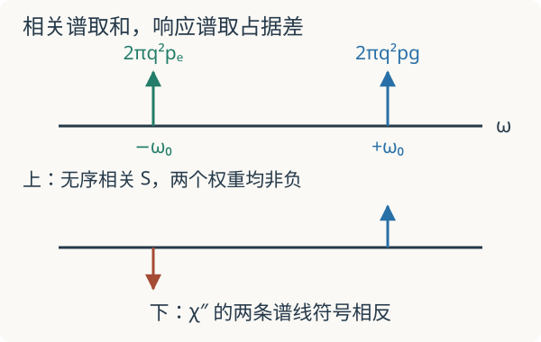

基础衔接 04 · 从对易子到响应谱：Kubo 公式怎样真正算出一个数
先修：量子态与密度矩阵、Kubo 与因果输运。本讲固定扰动 \(H'=-f(t)B\)，响应 \(\delta\langle B\rangle=\chi*f\)，Fourier 变换用 \(e^{+i\omega t}\)。目标：从算符推导谱函数，并用一个可精确对角化的模型检查正负号和单位。
1. 正外场应该把系统推向哪一边
考虑 \(H_0=\Delta\sigma_z/2\)，其中能隙 \(\Delta>0\)；取 \(B=q\sigma_x\)，\(q\) 与被测量量具有相同单位，\(f\) 的单位是能量除以 \(q\)。静态总 Hamiltonian 为
零温基态能量可精确算出：\(E_g(f)=-\sqrt{(\Delta/2)^2+(fq)^2}\)。利用 Hellmann–Feynman 关系，
因此静态易感率必须为正的 \(2q^2/\Delta\)。这比“符号取决于约定”更有约束：一旦规定了 \(-fB\) 和响应方向，任何公式都必须与这个精确小场极限一致。
2. 从密度矩阵的一阶展开确定顺序
设参考态 \(\rho_0\) 与 \(H_0\) 对易。在相互作用绘景中，
对可观测量 \(A\) 取迹，用迹的循环性：
所以
若将对易子写成 \([B(0),A(t)]\)，前面必须同时改为 \(-i/\hbar\)。这里 \(A=B\) 不代表对易子为零，因为两个算符在不同时刻。\(\theta(t)\) 保证外场之前没有响应，不是把负时间的平衡涨落删掉。
3. 插入能量本征态，得到 Lehmann 表示
令 \(H_0|n\rangle=E_n|n\rangle\)，平衡概率 \(p_n=e^{-\beta E_n}/Z\)，\(\beta=1/(k_BT)\)。对 Hermitian \(B\)，直接插入完备关系得到
为使 Fourier 积分收敛，先乘 \(e^{-\eta t}\)，\(\eta>0\)。用 \(\int_0^\infty e^{ixt-\eta t}dt=i/(x+i\eta)\)，再令 \(\eta\to0^+\)：
所有极点都在下半平面。使用 \(1/(x+i0)=\mathcal P(1/x)-i\pi\delta(x)\)，正频率的吸收权重来自低能级向高能级跃迁；热平衡下 \(p_n-p_m>0\)，故 \(\chi''(\omega)>0\)。
4. 两能级的每一项都能列出
令 \(\omega_0=\Delta/\hbar\)、\(r=p_g-p_e=\tanh(\beta\Delta/2)\)。只有基态与激发态之间的矩阵元非零，模平方为 \(q^2\)。于是
零频极限为 \(2rq^2/\Delta\)，零温时与第一节完全相同。该模型 \(B\) 没有对角矩阵元，因此这里的静态极限与平衡小场导数一致；一般系统还涉及守恒量、弛豫机制以及静态与长波极限的顺序，不能只凭本例推广。

图中的负频率负峰不意味着负概率。它属于对易子的响应谱；无序相关 \(S(\omega)=\int dt\,e^{i\omega t}\langle B(t)B(0)\rangle\) 则为
两峰都非负，且权重比 \(p_e/p_g=e^{-\beta\Delta}\)。对称噪声谱满足
在两条非零频率谱线上，\(r\coth(\beta\Delta/2)=1\) 正好把温度因子抵消。这里是分布意义下的热平衡 FDT，并非把任意非平衡噪声曲线乘一个常数。
先预测：把温度升高，正负相关谱的总权重是否改变？实验用 \(\hbar=q=1\)、参考能量单位固定，默认 \(\Delta=1,\beta=2,\eta=0.1,\omega=1\)。\(r\approx0.761594\)，展宽后的 \(\chi'\approx0.379847,\chi''\approx7.596949\)；未经展宽的静态极限 \(2r\approx1.523188\)。
图中用有限 \(\eta\) 把 delta 峰画为 Lorentz 峰，对应时间核乘 \(e^{-\eta t}\)。这是可读的展宽模型，不是已经推导了热浴或有限寿命。静态展宽结果为 \(2rq^2\omega_0/[\hbar(\omega_0^2+\eta^2)]\)，与 \(\eta\to0\) 极限有差别；也不能把展宽后的曲线逐点代入上述理想两谱线 FDT，声称仍是精确平衡模型。
5. 迁移题
题一。 零温下将能隙加倍，保持 \(q\) 固定，静态易感率如何变化？正频率 delta 谱峰的面积呢？
核对不同的量
静态易感率 \(2q^2/\Delta\) 减半；正频率响应峰面积 \(\pi q^2/\hbar\) 不变，只向更高频移动。峰位置、面积与零频响应不是同一件事。
题二。 正负频率相关谱的权重相等时，是否说明量子涨落消失？
核对高温极限
不。\(\beta\Delta\to0\) 时 \(p_g,p_e\to1/2\)，相关总权重仍为 \(2\pi q^2\)；响应中的差 \(r\) 趋零。相等的跃迁权重相减后响应变小，不能把差为零误读为两个权重都为零。
速查与下一步
对 \(H'=-fB\)，响应核是 \(+i\theta(t)\langle[A(t),B]\rangle/\hbar\)。相关谱有非负跃迁权重，响应谱取占据概率之差。继续弱驱动与量子度量谱学，把同一矩阵元接到可测跃迁率。一般响应理论参见 Tong：Kinetic Theory，线性响应部分；本讲两能级与符号检验在正文独立展开。核查：2026-09-08。